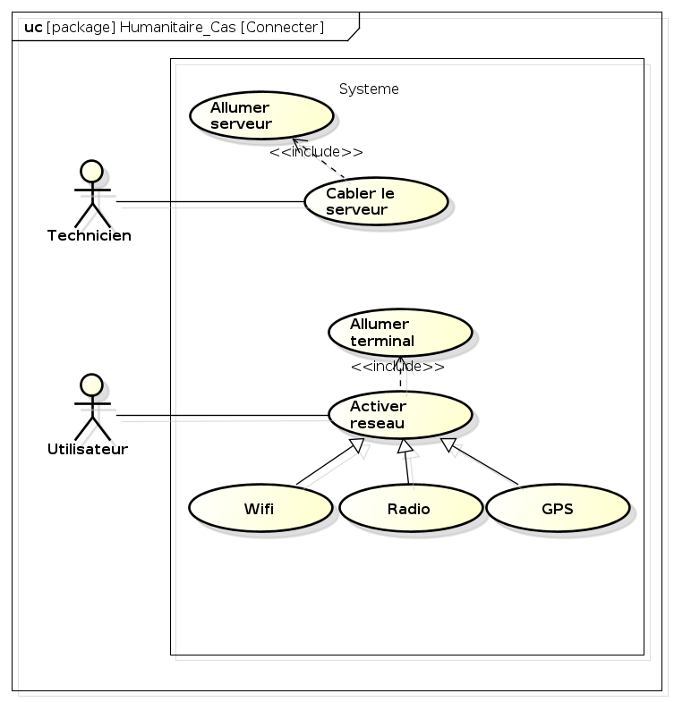
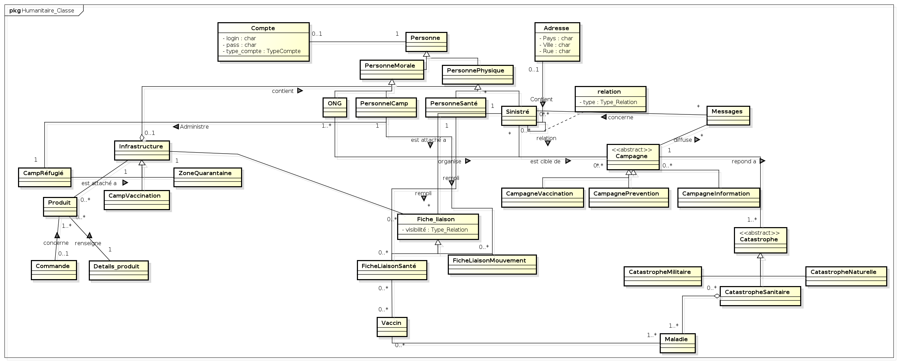

- Partie I : Approche de modélisation Système (SysML)
- Partie II : Approche de modélisation logicielle (UML)
- I-Introduction
- II-Définition du cahier des charges
- III-Réponses aux exigences
- III.1- Permettre aux proches d’un sinistré de pouvoir consulter les informations de celui-ci
- III.2- Permettre à une ONG d’organiser et gérer un campagne de vaccination
- III.3- Permettre aux ONG de se coordonner
- III-3 Permettre aux ONG de se coordonner
- III-4 Permettre au personnel sur place de gérer les stocks dans les infrastructures
- III-5 Permettre la diffusion de messages pertinents aux populations
- IV-Diagrammes complémentaires
- V-Conclusion
Partie I : Approche de modélisation Système (SysML)
I- Introduction
Cette partie à pour objectif de fournir une description systémique répondant à la problématique qui est de pouvoir proposer une solution informatique afin d’améliorer la logistique sur le terrain, d’actions humanitaires. Nous allons d’abord introduire le système et son contexte dans la partie Définition du contexte du système afin de fixer les idées et de permettre la compréhension de la suite de ce document. Nous essaierons de répondre au maximum aux exigences imposées et induites dans l’appel d’offre dans la partie Diagramme d’exigences. Nous détaillerons ensuite quelques exigences à l’aide de diagrammes de Cas, d’Activité, de Séquence dans une optique de clarification. La partie sysML n’est pas exhaustive dans le sens ou un très grand nombre de diagrammes peuvent être ajoutés pour compléter cette documentation. Nous avons pertinemment sélectionné les diagrammes afin de fournir une vue simple et compréhensible. Notre démarche est guidée par l’exemple SysML de l’OMG suivant:
http://www.omg.org/ocsmp/HSUV.pdf(#http://www.omg.org/ocsmp/HSUV.pdf
II- Définition du contexte du système
II.1- Vue quasi-réelle du système
Les images suivantes représentent le système dans son environnement et les acteurs interagissants sur le système.
Description des images dans II.2
II.2- Diagramme de contexte
Le système est composé d’un ensemble de terminaux (mobiles ou non) et d’un ensemble de serveurs. Les terminaux et les serveurs forment deux sous systèmes qui interagissent entre eux. Nous avons trouvé judicieux de réutiliser les systèmes déjà présents afin de rentabiliser les données et de collaborer avec le plus grand nombre. C’est pour cela que les serveurs du système doivent être capable de réutiliser les données des serveurs d’un organisme déjà présent. Par exemple, si un agent sur place travaille depuis 20 ans sur un projet et que toutes ses données sont stockées sur les serveurs d’une ONG, il parait aberrent de lui demander de ré-saisir les données en s’adaptant à notre application. Le système ainsi développé n’aurait aucun succès parmi les personnes déjà sur place. Un système dans un tel milieu fait face à des contraintes environnementales et a besoin de connectivités adaptables.
III- Les diagrammes d’exigences
Pour répondre au mieux au vaste et libre sujet, nous avons sélectionné des exigences génériques que nous raffinons ensuite pour arriver à un niveau de détails suffisant. Certaines exigences significatives sont ensuite détaillées à l’aide d’autres diagrammes pour permettre leur compréhension et/ou leur traçabilité. Nous avons essaye le plus possible de nous détacher du prisme logiciel durant cette phase
III.1- Hiérarchie d’exigences
Voici une liste non exhaustive des exigences du système. Elles ont été choisies pour leur aspect fondamental et générique. La documentation peut être directement trouvée sur le diagramme.
III.2- Raffinement d’exigences
Voici un raffinement des feuilles de l’arbre de la partie III.1. La documentation peut être directement trouvée sur le diagramme
III.3- Détails d’exigences
Les exigences nécessitants un travail de réflexion particulier sont détaillées dans cette partie à l’aide de diagrammes de Cas 1 , Séquence et Activité. Ces diagrammes seront présentes dans leur partie respective. Ici nous présentons seulement la façon dont les exigences sont détaillées.
Note 1: Le lien “refine” est représente par une note dans notre AGL (Astah sysml)
III.3.1-Détail de Autonome
III.3.2-Détail de connecté
III.3.3-Détail de Renseignable
III.3.3-Détail de Interrogeable
III.4- Table d’exigences
Toutes les exigences et leur description sont exprimées dans le tableau suivant:
| ID | Name | Text | |
|---|---|---|---|
| 5 | Résistance | Le système doit tenir face à des températures variables, des milieux humides et aussi à d’éventuels chocs | |
| 10 | Autonomie | En cas de problème de courant, le système doit pouvoir continuer à assurer un fonctionnement minimal ou au moins ne pas perdre ses données | |
| 6 | Durable | Le système doit pouvoir être mis en place pour une durée particulièrement longue | |
| 9 | Portabilité | Le système doit pouvoir être positionné dans des zones accidentés et critiques | |
| 3 | Connecté | Le système doit pouvoir communiquer de multiples façons avec l’extérieur et à l’intérieur même du système | |
| 4 | Accès | Le système doit être très accessible, dans les milieux à risque, quasiment déconnectés | |
| 20 | Maillage wifi | Les terminaux doivent être capable de communiquer entre eux jusqu’à la station de base | |
| 2 | Stockage | Le doit pouvoir stocker des informations | |
| 18 | Batterie | alternative en cas de coupure de d’électricité pour les éléments mobiles du système | |
| 16 | Antenne Radio | Le système doit être équipé | |
| 15 | Antenne GPS | Le système doit en être équipé | |
| 14 | Antenne GSM | Le système doit en être équipé | |
| 13 | Antenne Wifi | Le système doit en être équipé | |
| 17 | Antennes | Le système doit en être équipé | |
| 12 | Alimentation | Le système à besoin d’électricité pour fonctionner | |
| 11 | Mémoire | Le système doit disposer d’une mémoire pour assurer le stockage de données en vue son utilisation ultérieure | |
| 8 | Renseignable | Pour s’adapter et être polyvalent, le système doit pouvoir obtenir les informations d’autres systèmes extérieurs et acteurs extérieurs | |
| 7 | Traduit | Le système doit être utilisé par le plus grand nombre, et vu le nombre limité de connaissances linguistiques des potentiels utilisateurs, il faut que les informations sur le systèmes puissent être traduites | |
| 19 | Interrogeable | Le système doit être facilement consultable depuis l’intérieur et l’extérieur | |
| 1 | Ouvert | Le système doit pouvoir s’adapter à d’autres modules complémentaires et à des systèmes déjà présents dans les zones où il y a des actions humanitaires |
IV- Les diagrammes de cas
Haut niveau
Voici les cas d’utilisation vu du niveau le plus haut. Nous avons choisi de laisser le raffinement de ces derniers dans la partie 2.
Accroître l’autonomie
Ce diagramme de cas sert à raffiner l’exigence Autonomie. Il décrit succinctement la façon dont peut être vu cette exigence. Dans notre cas, un technicien peut avoir à démarrer un groupe ́électrogène si une panne de courant se produit afin que le serveur soit de nouveau opérationnel
Connecter

Ce diagramme de cas sert à raffiner l’exigence Connecté. Il décrit succinctement la façon dont peut être vu cette exigence. Dans notre cas, un technicien peut avoir à câbler un serveur afin qu’il soit accessible sur un réseau à partir de divers terminaux, et un utilisateur peut activer un réseau (que ce soit réseau wifi, radio ou GPS) en allumant son terminal.
Interroger
Ce diagramme de cas sert à raffiner l’exigence Interrogeable. Il décrit succinctement la façon dont peut être vu cette exigence. Dans notre cas, un utilisateur doit pouvoir effectuer une recherche ou bien consulter des données sur un serveur à partir d’un terminal.
Renseigner
Ce diagramme de cas sert à raffiner l’exigence Renseignable. Il décrit succinctement la façon dont peut être vu cette exigence. Dans notre cas, un utilisateur privilégie doit pouvoir saisir des données qui seront ajoutées dans la base de données du serveur du système. Un transfert de données peut avoir lieu entre le système et un système humanitaire existant.
V- Les diagrammes d’activité
Ces diagrammes n’ont pour objectifs que la description du déroulement d’une action effectuée sur le système par les acteurs extérieurs. Ils reprennent les précédents cas d’utilisation pour une continuité dans le raisonnement.
Autonome
Ce diagramme de cas sert à décrire l’action : Accroître l’Autonomie, qui peut être vu comme un cas d’utilisation pour le technicien. Si une panne de courant survient, le technicien doit être en mesure de pouvoir démarrer le groupe électrogène afin de permettre le redémarrage du serveur. Si le groupe électrogène est déjà allume, il ne reste qu’à redémarrer le serveur, si celui ci n’est pas déjà rallume.
Connecter

Ce diagramme de cas sert à écrire l’action : Connecter le système, qui peut être utile au technicien avec le serveur) comme à l’utilisateur avec le terminal). Le technicien peut avoir à câbler un serveur afin qu’il soit accessible sur un réseau, si le réseau n’est pas déjà câblé. Une fois fait, il allume le serveur afin de permettre au réseau d’être accessible via des terminaux. L’utilisateur lui, peut utiliser des terminaux pour activer un réseau. Pour cela, il doit allumer son terminal. Une fois fait, il peut activer le réseau.
Interroger
Ce diagramme de cas sert à décrire l’action : Interroger le système, elle peut être effectuée par n’importe quel utilisateur. Les droits d’accès sont trait ́es dans la partie 2. Si son terminal est éteint, l’utilisateur doit l’allumer. Ensuite, il peut soit effectuer une recherche, soit consulter les données. Sa demande peut également être rejetée.
Renseigner
Ce diagramme de cas sert à décrire l’action : Renseigner le système, elle peut être effectuée par un utilisateur privilégié. Les droits d’accès sont trait ́es dans la partie 2. L’utilisateur peut ajouter des données qui seront stockées sur le serveur. Pour cela, le serveur doit être allume. Ensuite, l’utilisateur peut saisir les données qui devront être enregistrées.
VI- Les diagrammes de séquences
Les diagrammes suivants nous permettrons de mettre en exergue une description chronologique desinteractions entre le système et les acteurs. Ils ne couvrent pas l’ensemble des interactions et sont en liens avec les diagrammes précédents afin de maintenir une traçabilité. Aussi nous avons associe à ces diagrammes une vue dite boîte noire afin de collecter les différents messages transmis entre le système et les acteurs
Autonomie

Ces diagrammes correspondent au cas d’utilisation Autonomie. Ici, nous exprimons le fait que le système, doit pouvoir fonctionner continuellement, il est prévu qu’un technicien puisse mettre en marche un groupe électrogène en cas de coupure d’électricité par exemple, pour fournir l’électricité nécessaire aux différents serveurs ; afin d’assurer une pérennité des différents services
Interroger
Ces diagrammes correspondent au cas d’utilisation Interroger. Ils expriment l’interrogation d’un serveur depuis une machine terminale (utilisateur lambda ). En effet un utilisateur pour pouvoir interroger un serveur doit au préalable mettre sous-tension son terminal, ensuite il peut soit faire une consultation concernant une information donnée, soit effectuer une recherche (Rechercher une personne ). Les serveurs doivent en retour pouvoir fournir une réponse à cette interrogation
Renseigner

Ces diagrammes correspondent au cas d’utilisation Renseigner. Ils mettent en exergue, le fait de pouvoir renseigner les différents serveurs qui appartiennent à notre système. Il faut au préalable que ceux- ci soient mis en marche, ensuite il est possible d’effectuer une saisie de données depuis des machines terminales spécifiques, afin de remplir les tables des bases de données existantes sur les différents serveurs.
VII- Conclusion
Nous arrivons au terme de la modélisation SysML. Nous avons éclairci les points suivants:
— Définition du système et de son contexte
— Élaboration du cahiers des charges à l’aide du diagramme d’exigences
— Définition d’un certain nombre de cas d’utilisation en lien avec le cahier des charges
— Description du déroulement de certaines actions avec le diagramme d’activité
Il s’agit maintenant de changer de prisme de conception. Nous allons décrire la partie la plus importante de cette documentation à travers le prisme logiciel cette fois.
Partie II : Approche de modélisation logicielle (UML)
I-Introduction
L’objectif de cette partie de la modélisation, consiste à proposer un modèle de notre système d’information vu d’un prisme logiciel cette fois ci. En effet, l’utilisation de UML pour modéliser ce système apparaît comme une évidence dans la mesure ou la modélisation UML permet d’obtenir une modélisation de très haut niveau indépendante des langages et des environnements, aussi d’exprimer dans un seul modèle tous les aspects statiques, dynamiques, spécifications, etc.. Ce qui constitue notre principal objectif. Pour ce faire, nous allons tout d’abord procéder à une définition succincte du cahier de charges, puis nous exprimerons par la suite les aspects Fonctionnel (diagrammes de Cas d’Utilisation), Statique (diagrammes de Classes), Dynamique (diagrammes d’ Etats, diagrammes activistes), pour chaque exigence exprimée dans le dit cahier de charges.
II-Définition du cahier des charges
Voici une liste de phrases simples visant à définir les besoins fonctionnels de notre application. Nous essaierons de satisfaire chacune d’elle et de détailler leur satisfaction dans les parties suivantes:
- Permettre aux proches d’un sinistre de pouvoir consulter les informations de celui-ci.
- Permettre à une ONG d’organiser et gérer une campagne de vaccination.
- Permettre aux ONG de se coordonner.
- Permettre au personnel sur place de gérer les stocks dans les infrastructures.
- Permettre l’information pertinente des populations.
Pour chacune des exigences précédentes nous présenterons les diagrammes selon la démarche suivante :
Cas → Classe → Etat → Activité.
III-Réponses aux exigences
III.1- Permettre aux proches d’un sinistré de pouvoir consulter les informations de celui-ci
Les proches d’un sinistre peuvent consulter ses informations. Il y a deux notions à éclaircir : la première, appelons la notion information, est le fait qu’un sinistre doit effectivement avoir des informations qui
puissent aider ses proches à le retrouver ; la deuxième, appelons la notion proche, implique que des relations sociales entre les sinistres doivent être prises en charge au sein de notre application. Nous allons éclaircir ces deux notions à l’aide de diagrammes UML dans les parties suivantes.
Éclaircissement des notions
Nous n’avons pas représente l’authentification par soucis de clarté. Il ne faut pas que n’importe quel utilisateur sache ou se trouve un réfugie. Par exemple, lors d’une guerre civile, si un sinistre est recherche par un chef de guerre et que ce sinistre est recense dans un camp de réfugie, il ne doit pas pouvoir le localiser. Seul les personnes autorisées par le réfugie peuvent accéder aux informations.

Les points importants à noter ici sont les relations et la visibilité d’une fiche de liaison. Une relation signifie que deux sinistres peuvent être qualifies de ”proches”. La visibilité d’une fiche de liaison permet de protéger ses informations et de ne les partager qu’avec un
groupe restreint.
Nous considérons ici que la gestion des mouvement des réfugies s’effectue dans un camp de réfugies donne. Lorsqu’un agent qui travaille dans ce camp désire gérer le mouvement d’un réfugié par rapport à ce camp, il commence par lancer l’outil de gestion de mouvements de réfugiés. Il doit ensuite entrer les informations nécessaires à son authentification (Identifiant agent, mot de passe, etc …). Pour des raisons de sécurité, tout comme pour le diagramme d’états ”Gestion Campagne”, s’il survient trois erreurs consécutives d’authentification, le compte utilisateur est bloque et on fait appel
à un administrateur qui renvoie de nouvelles informations d’authentification pour cet agent. S’il y a eu moins de trois erreurs et que l’identifiant et le mot de passe sont corrects, alors l’agent peut accéder à l’interface de gestion de mouvements sur lequel il peut soit modifier des mouvements déjà existants, soit enregistrer un nouveau mouvement.
- Si l’agent effectue un clic sur le bouton ”enregistrer” l’outil passe à l’ ́état ”enregistrement mouvement”. L’utilisateur peut donc dans cet état vérifier si il existe déjà des informations relatives au réfugie concerne, si oui il récupère
ces informations , sinon il effectue une nouvelle saisie des informations suivantes : Identité(nom, prénom, date de
naissance, sexe, etc), type de mouvement (flux entrant ou sortant du camp), date et lieu de l’enregistrement, motif,
etc … Si l’agent valide (clic bouton valider) les informations saisies et que ces données sont valides, l’outil entre dans l’état ”envoi des données” dans lequel il effectue un transfert de ces données vers un serveur, puis il se met en attente d’un accusé de réception. Quand l’accusé de réception est reçu, l’outil passe à l’état ”fin enregistrement” dans lequel il affiche une confirmation de l’enregistrement des données. Apres quoi, l’agent peut soit demander d’effectuer un nouvel enregistrement et l’outil retournera à l’état ”enregistrer mouvement”, soit faire une demande de modification et passer à l’ Etat modification mouvement, soit effectuer une déconnexion ce qui amènera l’outil à retourner à l’état authentification”.
** Si l’agent effectue un clic sur le bouton ”modifier” l’outil passe à l’état ”modification mouvement”. L’utilisateur peut alors choisir une ligne parmi tous les enregistrements existants, sur laquelle il peut faire des modifications. De même, si ces modifications sont validées par l’agent et que les données sont valides, l’outil entre dans l’état ”envoi des données” et il s’en suit les mêmes actions exprimées dans le paragraphe précédent.
Ici, le personnel d’un camp gère les mouvements des sinistres présents dans le camp. Pour cela, le personnel doit d’abord se connecter. Ensuite, si le réfugié n’existe pas dans le camp, un profil lui est créé, sinon, le personnel cherche à obtenir les informations le concernant. Si le réfugié sinistre n’a effectue aucun déplacement, alors le personnel devra saisir le type, le motif, la date et le lieu du mouvement. Si un mouvement a déjà été effectue, alors le personnel modifiera ces informations. Une fois les données saisies, le mouvement est enregistre pour le sinistre.
Dans le cas présent, un utilisateur veut consulter les informations d’un réfugié. Pour cela il devra effectuer une recherche contenant le nom, l’age et la ville d’origine du réfugié. Une fois les informations saisies, la recherche s’effectue et lui donnera la liste des réfugiés correspondants.
III.2- Permettre à une ONG d’organiser et gérer un campagne de vaccination
Afin de rendre le travail sur le terrain efficace, il faut qu’il soit organise. Pour cela, il faut que dans notre application, une ONG puisse planifier ses stratégies de soutiens à travers différentes campagnes. Il a deux notions à éclaircir : la première, appelons la notion ONG, est le fait de représenter un utilisateur particulier dans notre application ; la deuxième, appelons la notion campagne, est le fait de représenter une campagne organisée par une ONG.
* Éclaircissement des notions*
III.3- Permettre aux ONG de se coordonner
Tous les comptes qualifies de professionnels ont accès à certaines données sensibles. Ces données peuvent permettre de planifier des campagnes, réapprovisionner des stocks..
Les catastrophes peuvent être attachées à d’autres classes selon les besoins, elles peuvent être par exemple reliées à un lieu, une durée,… par soucis de simplification ces classes n’apparaissent pas ici. Il en est de même pour les campagnes.
Lorsqu’une ONG désire gérer une campagne, une personne membre de cette ONG doit entrer l’identifiant et le mot de passe correspondants à cette ONG. Pour des raisons de sécurité, s’il y a eu trois erreurs consécutives, lors de la quatrième fois que l’utilisateur valide l’identifiant et le mot de passe qu’il a entres, le compte est bloque et il ne sera débloqué que lorsque l’administrateur l’aura fait et aura renvoyé un nouvel identifiant avec un nouveau mot de passe à l’ONG. S’il y a eu moins de trois erreurs et que l’identifiant et le mot de passe sont corrects, alors l’utilisateur membre de l’ONG choisit s’il désire créer une nouvelle campagne ou s’il désire en modifier une déjà créée. S’il souhaite créer une nouvelle campagne, alors il doit choisir un sujet puis le valider, il doit ensuite saisir une zone cible et la valider et pour finir, il doit choisir la population cible et valider à nouveau. La campagne sera alors créée. Si le membre de l’ONG désire modifier une campagne déjà créée, il doit alors entrer le sujet, la zone cible et la population cible de la campagne à modifier et valider ces informations. Si aucune campagne créée par l’ONG identifiée ne correspond aux données entrées par l’utilisateur, alors ce dernier est invite à entrer de nouveau les données correspondantes à la campagne à modifier. Si une campagne créée par l’ONG identifiée correspond aux données entrées, alors le membre de l’ONG doit saisir un nouveau sujet et le valider, une nouvelle zone cible et la valider et il doit entrer une nouvelle population cible et la valider ́également. La campagne sera alors modifiée.
On considère dans notre cas qu’une ONG veut gérer une campagne. Pour cela elle doit d’abord s’authentifier. Si les informations d’authentification sont erronées, alors l’ONG doit retenter de se connecter avec des informations valides. Une fois la connexion réussie et la demande de gérer une campagne effectuée, si les informations sur la campagne n’ont pas ́et ́e saisies, l’ONG doit saisir le type, le sujet, la zone cible et la population cible de la campagne. Si l’une de ces informations est erronée, elle devra être ressaisie jusqu’à ce qu’elle soit valide. Si les données de la campagne ont déjà été saisies par le passe, l’ONG peut les modifier (si les informations modifiées ne sont pas valides, l’ONG devra les ressaisir jusqu’à ce qu’elles soient correctes). Une fois toutes les informations saisies, elles seront enregistrées pour la campagne en cours.
III-3 Permettre aux ONG de se coordonner
Cette exigence est satisfaite implicitement par l’exigence précédente. Il suffit que les responsables des différentes ONG consultent les informations relatives aux autres ONG et qu’ils choisissent les mesures à prendre. Cela relève plus de décisions politiques au sens large et cela nous concerne peu ou serai assez complexe à mettre en place (mécanismes de rappel de campagne, algorithmes de suggestion de campagne, etc…)
III-4 Permettre au personnel sur place de gérer les stocks dans les infrastructures
La gestion de stock implique que chaque infrastructure doit être administrée par une personne ou un groupe de personnes. On doit pouvoir effectuer des commandes en cas de ruptures de stock. Il y a deux notions à éclaircir : la première, appelons la gestion, est la représentation d’un utilisateur particulier charge de la gestion des stock dans une infrastructure ; la deuxième, appelons la stock, est la représentation d’un stock de produits.
Éclaircissement des notions
Un compte d’administration d’une infrastructure doit fournir une possibilité de gestion de stock. C’est un type de compte professionnel par infrastructure.
Il existe une multitude de patrons UML pour la gestion de stock mais par souci de simplicité nous en avons conçu un. Pour ́éviter de stocker plusieurs fois les détails d’un produit nous avons décide de faire une classe de détail dédiée. Le compte d’administration peut être représente par un compte d’une personne morale dans un camp de réfugies par exemple et il administrera tout le camp de réfugies.
afin de gérer le stock, on vérifie le niveau de l’inventaire. S’il y a encore assez de produits en stock, on ne commande rien alors que si le nombre de produits restant est faible, on recherche le produit à commander et une fois trouve, on le commande.
Pour gérer un stock, un professionnel, qui est soit une personne membre d’une ONG, soit un personnel d’un camp ou soit un employé de sante doit tout d’abord s’authentifier. Si l’identifiant entré et le mot de passe entre correspondent à l’identifiant et au mot de passe d’un professionnel, alors le professionnel peut consulter le stock, sinon il est invite à entrer de nouveau un identifiant et un mot de passe.
Si le stock est insuffisant, le professionnel connecte peut alors passer une commande du(des) produit(s) dont le stock est insuffisant. Si le stock restant est suffisant, le professionnel ne passe pas de commande.
III-5 Permettre la diffusion de messages pertinents aux populations
Les sinistres peuvent être cibles de messages aux objectifs différents. Ils sont cibles par des organismes pour des campagnes. Il y a une notion à éclaircir : notion information
Éclaircissement des notions
Un sinistre est cible par une campagne et reçoit des messages la concernant. Ces messages sont choisis et envoyés par un responsable au sein d’une ONG. C’est une façon de contribuer à l’information pertinente des populations.
A chaque nouvelle information, celle-ci est vérifiée afin de savoir si elle est importante ou non. Si elle ne l’est pas, elle ne sera pas diffusée et si elle est importante, elle sera diffusée via réseau GSM, wi-fi et radio. Cependant un incident radio, GSM et/ou wi-fi peut avoir lieu. Dans ce cas, si un incident lors de la diffusion radio à lieu par exemple, le système continuera d’essayer de diffuser cette information via radio jusqu’à ce qu’elle soit bien envoyée, et il en est de même s’il se produit un incident de diffusion via wi-fi ou via GSM
Dans notre cas, une ONG veut diffuser une information. L’information est d’abord triée, afin de déterminer son importance. Si elle n’est pas importante, elle n’est pas diffusée, sinon, elle sera diffusée.
IV-Diagrammes complémentaires
IV-1 Diagrammes de Cas
Voici le diagramme de cas complet du système, les commentaires ont été place directement sur le diagramme car ils se rapportent à certaines parties du diagramme.
IV-2 Diagrammes de Classe

Voici le diagramme de classe complet du système. Bien sûr, on pourrait ajouter des éléments comme la gestion des droits d’accès mais cela alourdirai considérablement le diagramme. On retrouve l’ensemble des petits diagrammes de classe utilises dans les parties précédent
IV-3 Diagrammes d’Etat
Lorsqu’un utilisateur désiré rechercher un réfugié, il doit entrer dans un terminal (mobile ou non) le nom, le prénom et la date de naissance de la personne qu’il désire trouver. L’utilisateur peut envoyer la requête au serveur uniquement si tous les champs requis sont bien tous remplis (nom, prénom et date de naissance dans notre cas).
Une fois la requête envoyée au serveur, le serveur vérifie dans la base de données contenant les camps ainsi que les réfugies qui s’y trouvent si la personne recherchée se trouve dans l’un des camps. Si c’est le cas, le serveur envoie les informations relatives au camp où se trouve le réfugie recherche à l’utilisateur, sinon le serveur signale à l’utilisateur qu’aucune personne n’a été trouvée et le renvoie sur la page de saisie d’informations afin de chercher une personne à nouveau s’il le désire. Cependant, un incident réseau peut avoir lieu lors de la validation des informations par l’utilisateur ou lors de la réponse du serveur.
IV.4 Diagrammes d’activité
On considéré ici qu’un sinistre (ie. personne qui subit les conséquences liées a une catastrophe et qui ne se trouve pas forcement dans un camp de réfugiés) peut créer un compte depuis un terminal : Sur un terminal, une fois l’application de création de compte lancée, l’utilisateur peut saisir des informations le concernant
via un formulaire d’inscription . si les informations saisies sont déjà utilises ou erronées l’outil d’inscription redemande une saisie des informations par un nouveau formulaire. Si les informations sont valides alors elles seront enregistrées sur le serveur sous la forme d’un nouveau compte afin de permettre une connexion ultérieure.
On considère ici qu’un sinistré veut modifier les informations de son compte depuis un terminal. Pour cela, il doit d’abord se connecter. Si les informations saisies sont correctes, alors la connexion s’effectue, sinon, il devra ressaisir ses identifiants valides. Une fois connecté, il peut modifier les informations le concernant, dans la mesure où celles-ci restent correctes (sinon il devra en ressaisir des correctes). Une fois les modifications apportées, elles seront enregistrées sur le serveur pour le compte du sinistré

Dans notre cas, un sinistre veut rechercher un camp. Pour cela, il doit saisir un lieu via son terminal. Si le lieu n’existe pas, il devra en retaper un valide. Si il est correct, la recherche s’effectue et lui donnera la liste des camps à proximité du lieu.
V-Conclusion
Nous arrivons au terme de la modélisation UML. Nous avons éclairci les points suivants:
— Définition du cahiers des charges.
— Réponse aux exigences grâce à certains cas d’utilisation en lien avec le cahier des charges.
— Description précise et concise du l’état du système via des diagrammes de classes.
— Description du déroulement de certaines actions avec les diagrammes d’activités.
— Planification des interactions du système avec l’extérieur par le diagramme de séquence.
UML est un support pour les développeurs, la compréhension du problème leur ai facilitée et ils peuvent débuter la programmation directement au contraire du SysML qui est plus adapte d’un point de vue ingénierie.